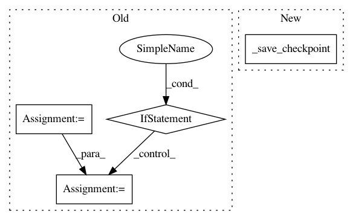

50a33950a4b23c614152696e6f979ae978233432,mmcv/runner/hooks/checkpoint.py,CheckpointHook,after_train_iter,#CheckpointHook#Any#,67
Before Change
runner.logger.info(
f"Saving checkpoint at {runner.iter + 1} iterations")
if not self.out_dir:
self.out_dir = runner.work_dir
runner.save_checkpoint(
self.out_dir, save_optimizer=self.save_optimizer, **self.args)
// remove other checkpoints
if self.max_keep_ckpts > 0:
filename_tmpl = self.args.get("filename_tmpl", "iter_{}.pth")
current_iter = runner.iter + 1
for _iter in range(
current_iter - self.max_keep_ckpts * self.interval, 0,
-self.interval):
ckpt_path = os.path.join(self.out_dir,
filename_tmpl.format(_iter))
if os.path.exists(ckpt_path):
os.remove(ckpt_path)
else:
break
After Change
f"Saving checkpoint at {runner.iter + 1} iterations")
if self.sync_buffer:
allreduce_params(runner.model.buffers())
self._save_checkpoint(runner)
In pattern: SUPERPATTERN
Frequency: 3
Non-data size: 4
Instances
Project Name: open-mmlab/mmcv
Commit Name: 50a33950a4b23c614152696e6f979ae978233432
Time: 2020-10-14
Author: swanxinjiang@gmail.com
File Name: mmcv/runner/hooks/checkpoint.py
Class Name: CheckpointHook
Method Name: after_train_iter
Project Name: OpenNMT/OpenNMT-tf
Commit Name: ab6f9e4c489beea3bec518d60629c0f8af0b6123
Time: 2019-06-21
Author: guillaume.klein@systrangroup.com
File Name: opennmt/runner.py
Class Name: Runner
Method Name: train
Project Name: open-mmlab/mmcv
Commit Name: 50a33950a4b23c614152696e6f979ae978233432
Time: 2020-10-14
Author: swanxinjiang@gmail.com
File Name: mmcv/runner/hooks/checkpoint.py
Class Name: CheckpointHook
Method Name: after_train_epoch